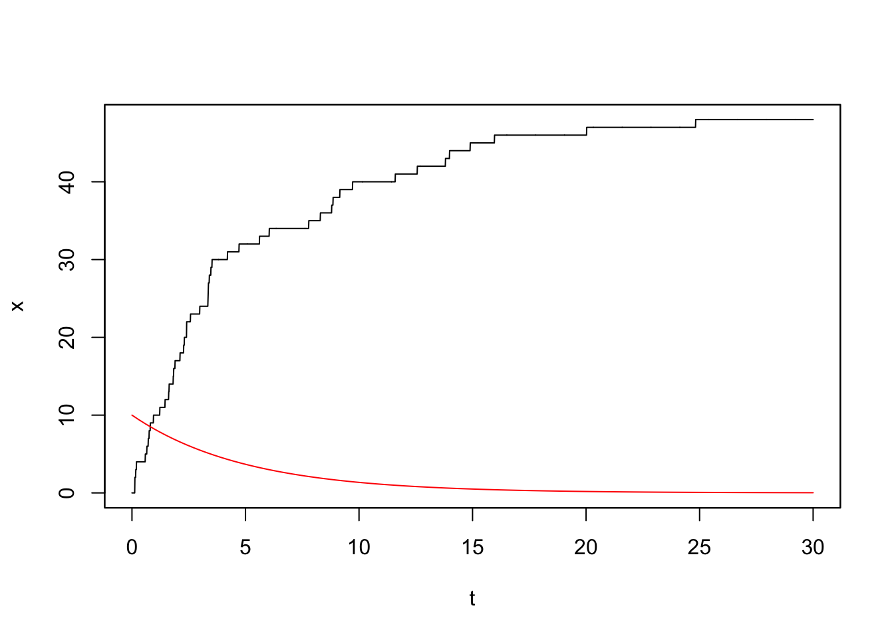

YUIMA 入門
確率微分方程式のシミュレーションと推測のためのパッケージ`yuima`の構造と使い方をまとめます．
A Blog Entry on Bayesian Computation by an Applied Mathematician
$$
$$
YUIMAについては次の記事も参照：
Poisson 過程と言った場合，Poisson 点過程 \(\eta\) と Poisson 計数過程 \(N\) の２つを峻別する必要がある．1
このとき， \[ \eta([0,t])\sim\mathrm{Pois}(\lambda t), \] \[ N_t\sim\mathrm{Pois}(\lambda t), \] が成り立ち，\(N\) は Lévy 過程になる．
\(N\) は Lévy 過程の中でも，大きさ１の跳躍のみで増加するものとして特徴付けられる．2
\(N\) は，ランダム測度 \(\eta\) が定める \[ N_t(\omega)=\eta(\omega,[0,t])=\int_0^t\eta(\omega,ds) \] とも理解できる．
従って，任意の点過程 \(\eta\) に対して，積分 \[ (\eta|f)(\omega):=\int_E\eta(\omega,dx)f(x)\in[-\infty,\infty] \] が定まる．
点過程 \(\eta\) が 真の点過程 であるとは，ある \(E\)-値確率変数の列 \(X_1,X_2,\cdots\) と，\(\mathbb{N}\cup\{\infty\}\)-値確率変数 \(\kappa\) が存在して， \[ \eta=\sum_{n=1}^\kappa \delta_{X_n}\;\;\text{a.s.} \] と表せることとする．
点過程には「各集合 \(B\in\mathcal{E}\) に平均何個の点が入るか」を表す 強度測度 \(\lambda\) が定まる．平均測度 とも呼ばれる．
この強度測度 \(\lambda\) は \(\operatorname{E}[d\eta]\) のようなものであり，Fubini の定理のような性質 \[ \operatorname{E}\left[\int_E u\,d\eta\right]=\int_Eu\operatorname{E}[d\eta] \] が成り立つ．これを Campbell の公式 という．
２つの強度測度 \(\lambda,\lambda'\) は \(\sigma\)-有限であるとする．
このとき，\(\lambda=\lambda'\) ならば，これを強度とする Poisson 過程は分布同等である．10
加えて，\(\sigma\)-有限な強度測度を持つ Poisson 過程は，真の点過程（と同分布）である：
実は Poisson 点過程は，Poisson 分布と同様に，可算な範囲で再生性がある：\(\eta^{(1)},\eta^{(2)},\cdots\) を独立な Poisson 点過程とすると， \[ \eta:=\sum_{k=1}^\infty\eta^{(k)} \] も Poisson 点過程であり，強度測度は \(\nu:=\sum_{k=1}^\infty\lambda^{(k)}\) となる．12
従って，実際は \(\sigma\)-有限な強度測度を持つ Poisson 過程よりもさらに一般的な設定で上の定理が成り立つ．
\(\mu\in\mathcal{P}(E),\pi\in\mathcal{P}(\mathbb{N})\) とする．\(X_k\overset{\text{iid}}{\sim}\mu\) と \(\kappa\sim\pi\) について， \[ \eta:=\sum_{k=1}^\kappa\delta_{X_k} \] は点過程を定める．これを サンプリング分布 \(\mu\) を持った \(\pi\) による 複合二項過程 という．14
ある \(\gamma>0\) に関して \(\pi=\mathrm{Pois}(\gamma)\) と取った場合，\(\eta\) は強度 \(\gamma\mu\) を持った Poisson 過程となる．
複合二項過程について，次が成り立つ：
\(\mathbb{R}_+\) の Poisson 過程で，強度が \(\mathbb{R}_+\) 上の Lebesgue 測度の定数倍であるものを 一様 Poisson 過程 といい，\(\lambda>0\) を レート ともいう．
\(\eta\) を \(\sigma\)-有限な強度 \(\lambda\) を持つ Poisson 過程とするとき，\(\eta\) の任意の可測写像 \(T:E\to F\) による像は \(T_*\lambda\) を強度とする Poisson 過程となり，\(\eta\) の任意の \(K\)-印付き過程もやはり Poisson 過程になる．18
\(K:E\to\mathcal{P}(F)\) が定値関数になる場合（すなわち \(\{Y_n\}\) が \(X_n\) の値に依らずに独立同分布に定まる場合），これを 独立 \(K\)-付印 という．
すなわち，点 \(x\in E\) に定まる所定の確率 \(p(x)\) に関して，確率 \(p(X_n)\) で点 \(X_n\) を脱落させて得る点過程を，\(p\)-剪定という．
\(p\)-剪定は強度 \(p(x)\lambda(dx)\) を持つ Poisson 過程となる．加えて，\(1-p\)-剪定と違いに独立になる．21
従って，\(f\in\mathcal{L}^1(\lambda)\) に関して，\((\eta|f)\) は殆ど確実に有限になる．
加えて，中心化された積分 \[ I(f):=(\eta|f)-(\lambda|f)\in L^2(\operatorname{P}) \] は \(L^1(\lambda)\cap L^2(\lambda)\) 上の等長作用素で，\(L^2(\lambda)\) 上に有界延長する．23
yuimaパッケージでは，Poisson 計数過程は複合 Poisson 計数過程の特別な場合として扱うため，シミュレーション法は第 2.5 節で扱い，ここでは結果のみを示す．
強度 \(\lambda>0\) を持つ（一様な） Poisson 計数過程とは，\(\mathbb{R}_+\) 上のレート \(\lambda>0\) を持つ一様な Poisson 点過程（第 1.5.2 節）\(\eta\) に対して， \[ N_t(\omega):=\eta(\omega,[0,t]) \] で定まる Lévy 過程である．
レート \(\lambda>0\) はジャンプの頻度を表している：

強度関数 \(\lambda:\mathbb{R}_+\to\mathbb{R}^+\) を持つ 非一様な Poisson 計数過程 とは，全く同様な定義 \[ N_t(\omega):=\eta(\omega,[0,t]) \] をし，ただ \(\eta\) の強度測度を \(\lambda(t)\ell_+(dt)\) に置き換えたものである．
例えば，強度関数 \[ \lambda(t)=10e^{-\frac{t}{5}} \] を持つ非一様な Poisson 過程は次のような見本道を持つ：

時間が経つごとに強度関数 \(\lambda\) の値（赤線）が小さくなり，それに伴ってジャンプの頻度が減少していくことがわかる．
点過程としての複合 Poisson 過程は，印付けられた Poisson 点過程（第 1.6 節）から構成される．
Poisson 過程 \(N\) は，大きさ１の跳躍のみで増加する Lévy 過程として特徴付けられるのであった．
この跳躍の大きさを任意の確率分布 \(\mu\in\mathcal{P}(\mathbb{R})\) に従ったものに変更したもの \[\begin{align*} M_t&:=\sum_{n=1}^{N_t}Y_n\\ &=\sum_{k=1}^\kappa Y_k1_{\left\{X_k\le t\right\}} \end{align*}\] が 複合 Poisson （計数）過程 \(\mathrm{CP}(\lambda,\mu)\) である．25
\(\mu=\delta_1\) の場合が Poisson 過程に当たる．26
この複合 Poisson 過程は，印付けられた Poisson 過程 \[ \eta:=\sum_{n=1}^\kappa\delta_{(X_n,Y_n)} \] が \(E\times\mathbb{R}\) 上の強度測度 \(\mu\otimes\lambda\ell\) を持つ Poisson 点過程であり，各 \(X_n\) に \(Y_n\) の重みをつけて足し合わせた点過程 \[ \xi(\omega,B):=\int_{B\times\mathbb{R}}r\,\eta(\omega,dydr) \] が基になっている．
これが複合 Poisson 点過程であり，\(\xi\) に関する積分として \(M\) が理解できる（第 1.8.1 節参照）： \[ M_t(\omega)=\xi(\omega,[0,t])=\int^t_0\xi(\omega,ds). \]
違いに素な \(A,B\in\mathcal{E}\) に対して \(\xi(A)\perp\!\!\!\perp\xi(B)\) を満たすようなランダム測度 \(\xi\) は，固定した原子を持たないならば，ある決定論的な測度と複合 Poisson 点過程の和として表せる．32
ここでも \(\xi\) と \(M\) は全く異なる数学的対称であり，区別を要する．
特に，\(\xi\) は確率核，\(M\) は Lévy 過程である．
しかし，Lévy 過程に関する確率積分を定義する際，２つの概念は密接に関連する．
\(E\times\mathbb{R}\setminus\{0\}\) 上の Poisson 点過程 \(\eta\) の第二成分が，\(E\) 上のランダム点の「重み」のようなもので，\(\xi\) は重みをつけて点を積分したものと理解できる．これは一般化された Poisson 複合の手続きに思える．
第 1.6 節で扱ったような，（一様とは限らない）Poisson 点過程の独立付印の場合が特に重要なクラスである．
これは，Lévy 過程のジャンプ測度が，このクラスの複合 Poisson 点過程になるためである．34
\(E\) 上の複合 Poisson 点過程 \(\xi\) とは，\(E\times\mathbb{R}^+\) 上の Poisson 点過程 \(\eta\) に他ならないため，Poisson 点過程に関する積分を通じて，\(f\in\mathcal{L}(E)\) に関して \[ \int_Ef(z)\,\xi(dz)=\int_Erf(y)\,\eta(dydr) \] と定義できる．39
Campbell の定理 1.3 より，\((r,z)\mapsto rf(z)\) が \(\eta\) の強度測度 \(\lambda\) に関して可積分ならば，右辺は可積分であるから，\((\xi|f)\) も可積分な確率変数を定める．
単に複合 Poisson 過程といった場合，通常，ここでいう一様な複合 Poisson 計数過程を指すことが多い．
この \(X_t\) は Lévy 過程になっており，\(X_t\) の特性関数は \[ \varphi(u)=\exp\left(\lambda t\int_{\mathbb{R}^d}\biggr(e^{i(u|y)}-1\biggl)\mu(dy)\right) \] で表される．46 すなわち，\(X_t\) は複合 Poisson 分布 \(\mathrm{CP}(\lambda t,\mu)\) に従う．
すなわち，複合 Poisson 分布が一様であるとは，背後にある \(\mathbb{R}^d\times\mathbb{R}_+\) 上の Poisson 点過程が，\(\mathbb{R}_+\) 上の一様な Poisson 点過程（第 1.5.2 節）の独立付印過程になっていることをいう（第 1.6 節）．
さらに，Lévy 測度が \(\lambda\mu\) という有限測度になるという重要な仮定も含まれている．
一方で，一般の Lévy 分布の跳躍測度は，\(\mathbb{R}_+\) 上の一様な Poisson 点過程に基づくとは限らない（第 2.2.2 節）上に，\(\mathbb{R}^d\setminus\{0\}\) 上有限とも限らない．
このような場合でも，一般の複合 Poisson 点過程 \(\xi\) を通じて，複合 Poisson 計数過程が \[ M_t(\omega):=\xi(\omega,[0,t]) \] と定義できる．
\(\xi\) が \(\mathbb{R}_+\times\mathbb{R}^d\) 上の Poisson 点過程 \(\eta\) が定めるものであるとすると， \[ M_t(\omega)=\int_0^t\int_{\mathbb{R}^d\setminus\{0\}}r\,\eta(\omega,dsdr) \] と表せる．
yuimaパッケージには，複合 Poisson 分布専用のコンストラクタsetPoissonが用意されている．このコンストラクタは２つの引数を持つ：
この場合はsetModel内でモデルを定義する．
(Nualart and Nualart, 2018, p. 159) 例9.1.3，(Revuz and Yor, 1999, p. 471) 定義XII.1.3 などは，Poisson 計数過程の方を Poisson 過程と呼んでおり，(Last and Penrose, 2017) などは Poisson 点過程の方を Poisson 過程と呼んでいる．(Eberle, 2012, p. 18) では，ここでは点過程とランダム測度を混用しているが，この２つを使い分けている．(Vasdekis, 2021) も，ここでいう計数過程を点過程と呼んでいる．↩︎
(Revuz and Yor, 1999, p. 472) 命題XII.1.4など．↩︎
(Kallenberg, 2017, p. 49)，(Last and Penrose, 2017, p. 11) 定義2.1 に倣った．全く同じ概念を (伊藤清, 1991, p. 298) は 偶然配置 と呼ぶ．↩︎
(Last and Penrose, 2017, p. 48) 系6.5 を参照．↩︎
(Last and Penrose, 2017, p. 129) 定義13.5 に倣った．↩︎
(Murphy, 2023, p. 696) 18.4.3 節も参照．↩︎
(伊藤清, 1991, p. 298) に倣った．↩︎
(Last and Penrose, 2017, p. 13) 命題2.7 に倣った．(Campbell, 1909) は元々真空管内の shot noise の研究をしていた．結果の一部は G. H. Hardy にもよるという．↩︎
(Nualart and Nualart, 2018, p. 160) 定義9.2.1，(Sato, 2013, p. 119) 第4章19節，(Resnick, 2002, p. 303)，(Sato, 2013, p. 119) 定義19.1，(Last and Penrose, 2017, p. 19) 定義3.1 に倣った．↩︎
(Revuz and Yor, 1999, p. 476) 命題 XII.1.12，(Last and Penrose, 2017, p. 20) 命題3.2 はより一般的な状況で示している．↩︎
(Nualart and Nualart, 2018, p. 160) 定理9.2.2 では，\(\lambda\) はアトムを持たないとし，\(E\) を Polish 空間として示している．(Last and Penrose, 2017, p. 22) 系3.7 はここよりも一般的な設定で示している．↩︎
(Eberle, 2012, p. 19) 定理1.6も参照．↩︎
逆に，指数分布のシミュレーションにより，一様分布の順序統計量が効率的にシミュレーションできる．このことは粒子フィルターにおけるリサンプリングに応用できる．(Chopin and Papaspiliopoulos, 2020, p. 113) 命題9.1も参照．↩︎
\(\pi=\delta_m\) であるとき，\(\eta\) を単に二項（点）過程という．これは \(\eta(B)\sim\mathrm{Bin}(m,\mu(B))\) が成り立つためである．(Last and Penrose, 2017, p. 20) 定義3.4も参照．↩︎
(Last and Penrose, 2017, p. 23) 命題3.8も参照．↩︎
(Last and Penrose, 2017, p. 59) 定理7.2参照．↩︎
(Last and Penrose, 2017, p. 40) 定義5.3 に倣った．(Kingman, 1992, p. 55) 5.2節も参照．↩︎
例えば (Kingman, 1992, p. 55)，(Last and Penrose, 2017, p. 42) 命題5.5 を参照．↩︎
日本語文献としては，(西村克己 and 江藤剛治, 1981) も参照．↩︎
(Last and Penrose, 2017, p. 43) 定義5.7 に従った．↩︎
(Last and Penrose, 2017, p. 44) 系5.9 参照．↩︎
(Last and Penrose, 2017, p. 111) 命題12.1 参考．↩︎
(Nualart and Nualart, 2018, p. 163) 9.3節，(Last and Penrose, 2017, p. 113) 命題12.4 など．↩︎
(Sato, 2013, p. 123) 定理19.5 や (Eberle, 2012, p. 20) 定理1.7 は強度測度 \(\lambda\) が有限な場合について述べている，(Nualart and Nualart, 2018, p. 164) は補過程に関する積分に関して述べており，そのために追加で\(-iu\int_Eh(z)\lambda(dz)\) の項を持つ．．↩︎
(Nualart and Nualart, 2018, p. 159) 例9.1.4，(Last and Penrose, 2017, p. 155) 例15.5 など．↩︎
(Applebaum, 2009, p. 50) も参照．↩︎
(Iacus and Yoshida, 2018, p. 171) 4.8.1 節も参照．↩︎
(Resnick, 2002, p. 174)，(Mitov and Omey, 2014, p. 1)，(Nummelin, 1984, p. 49) 定義4.2 などに倣った．↩︎
\(\left\{z\in\mathbb{R}^d\mid\lvert z\rvert>\epsilon\right\}\) 上で有限でないと，これを Lévy 測度にもつ Lévy 過程は存在しない．(Eberle, 2012, p. 20) 定理1.7も参照．↩︎
(Eberle, 2012, p. 26) 定理1.10 も参照．↩︎
(Kingman, 1992, p. 79) 第８章，(Last and Penrose, 2017) 第 15.3 節参照．↩︎
(Last and Penrose, 2017, p. 153) に倣った．↩︎
一様じゃない Lévy 過程，すなわち加法過程の場合は，\(\lambda((0,t]\times B)=\nu_t(B)\) という関係にある．これはもはや独立付印ではないが，やはり印付きの Poisson 過程が肝心であることは変わらない．↩︎
(Nualart and Nualart, 2018, p. 162) 例9.2.4 を参考．↩︎
(Nualart and Nualart, 2018, p. 162) 例9.2.4 による用語法．\(N\) をランダム測度として跳躍測度と呼んでいる．↩︎
(Sato, 2013, p. 120) 定理19.2(i) を参照．↩︎
(Nualart and Nualart, 2018, p. 164) 例9.3.1，(Last and Penrose, 2017, p. 161) 15.4節なども参照．↩︎
(Nualart and Nualart, 2018, p. 164) 例9.3.1，(Sato, 2013, p. 120) 定理19.2，(Protter, 2005, p. 31) 定理42 など参照．↩︎
(Sato, 2013, p. 119) が指摘するように，まるで Cauchy の主値積分である．↩︎
ただし，\(\widehat{\eta}([0,t]\times A):=\eta([0,t]\times A)-t\nu(A)\) を中心化した Poisson 過程とした．これを Poisson 補過程 (compensated Poisson process) ともいう．↩︎
(Sato, 2013, p. 121) 定理19.3 も参照．↩︎
(Last and Penrose, 2017, p. 162) 例15.14 を参考にした．↩︎
(Iacus and Yoshida, 2018, p. 137), p.158，(Sato, 2013, p. 18) 定理4.3，(Protter, 2005, p. 33) 例2，(Baudoin, 2014, p. 90) 演習3.44，(Applebaum, 2009, p. 49) 命題1.3.11 に倣った．↩︎
(Sato, 2013, p. 20) 命題4.5など参照．↩︎
Lévy 過程が駆動する SDE モデルの定義方法は (Iacus and Yoshida, 2018, p. 191) 4.11.3 節を参照．↩︎